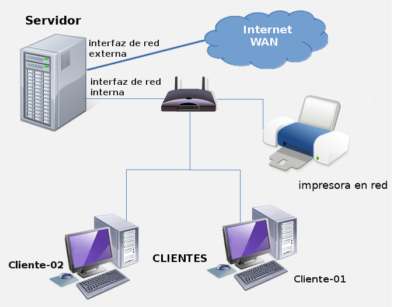

2. Direccionamiento IP
1. Introducción
Una de las características que define al protocolo IP en su versión 4 es el uso de direcciones de 32 bits. El protocolo IP es una de las bases fundamentales de las conexiones de red e internet.
2. ¿Qué es una dirección IP?
Un conjunto de expresiones numéricas que de manera lógica identifica un elemento de conexión de red (interfaz / tarjeta de red) de los distintos dispositivos de una red (servidor, portátil, móvil, etc.).

Es necesario tener en cuenta que cualquier dirección IP no representa realmente a un dispositivo de una red, sino que representa una interfaz de red, por lo que si un dispositivo pertenece a varias redes debe poseer al menos tantas direcciones IP como redes a las que pertenezca.
Las direcciones IP en su versión IPv4 constan de 32 bits, pero se pueden expresar en notación decimal, dividiendo los 32 bits en cuatro octetos (lo que equivale a 4 bytes), por lo tanto disponemos de 2^32 direcciones IP posibles, es decir, más de 4.000 millones de direcciones IP.
Estos octetos se separan mediante puntos y su valor esta entre 0 y 255 (1 byte = 8 bits = 11111111).
- Por ejemplo, si se tiene la dirección 192.168.0.1; 192 es el decimal equivalente al primer byte de la dirección, 168 es el decimal equivalente al segundo byte, etc.
3. Clases de direcciones IP
Inicialmente se comenzó a utilizar la direcciones IP usando el primer octeto (byte = 8 bits) para identificar la red y dejar el resto para identificar interfaces de red (equipos).
En 1981 se revisó su funcionamiento y se definió el concepto CLASE para disponer de un criterio consensuado en el establecimiento de direcciones IP.
CLASE A. En este tipo de redes, el primer byte está reservado para el identificador de la red y el resto de los bytes se utilizan para poder identificar los distintos dispositivos dentro de la red.
Este tipo de redes son las utilizadas por organizaciones en las que se necesitan gran cantidad de hosts. El espacio de direcciones de redes abarca desde la dirección 1.0.0.0 hasta la dirección 127.255.255.255.
Su máscara de red es 255.0.0.0 o /8. La primera y la última dirección IP (Broadcast) tienen funciones reservadas y no se pueden utilizar, por lo tanto se consideran IPs especiales.
CLASE B. Con un espacio de direcciones que abarca desde la dirección 128.0.0.0 hasta la dirección 191.255.255.255, posee la máscara de red 255.255.0.0 o /16. Este tipo de redes se pensó para su uso por un gran número de organizaciones que poseen un gran número de hosts, ya que los primeros 2 bytes se utilizan para el identificador de la red y los dos últimos para identificar los hosts dentro de dicha red.
CLASE C. Pensada para organizaciones con pocas estaciones de trabajo, los tres primeros bytes de la dirección se utilizan para el identificador de red y el último byte para identificar los hosts dentro de la red. Su espacio de direcciones abarca desde la dirección 192.0.0.0 hasta la dirección 223.255.255.255 y su máscara de red es 255.255.255.0 o /24.
CLASE D (Multicast). Su espacio de direcciones abarca desde la dirección 224.0.0.0 hasta la dirección 239.255.255.255. Espacio reservado para direcciones de multidifusión asociando este concepto con la transmisión de contenidos multimedia.
CLASE E (Experimental). Su espacio de direcciones abarca desde la dirección 240.0.0.0 hasta la dirección 247.255.255.255. Espacio reservado para experimentación e investigación de futuros proyectos.
Figura 1. Clases de red.
Otros conceptos sobre direcciones IP
- Classfull. Es el número de redes y hosts soportados por cada una de las clases vistas anteriormente, relacionadas con sus máscaras de red /8, /16, /24.
- Classless. Permite definir el número de hosts sin tener en cuenta la clase de la red y por tanto su máscara, como veremos en subnetting.
Debes conocer
3. Tipos de direcciones IP
Las direcciones IP, además de dividirse en clases, también se dividen según su privacidad en 2 tipos
- Las IP públicas: Son accesibles desde cualquier punto de internet, las cuales son proporcionadas por una empresa "Proveedora de Servicios en Internet" (ISP) dentro de sus rangos. A través de un router y con la configuración específica dada por el operador podremos conectarnos a internet.
- Las IP privadas: Son aquellas destinadas para el uso privado, es decir, para las redes LAN. Cómo hemos visto en el punto anterior, las IP privadas están clasificadas en CLASES siendo las clases A, B y C las más utilizadas. Si miramos nuestra propia dirección IP, lo normal es que nos aparezca un 192.168.X.X., que es uno de los rangos de direcciones IP privadas más típico y es que las IP privadas tienen sus propios rangos de IP reservados según la clase que se utilice:
- CLASE A: El rango va desde 10.0.0.0 hasta 10.255.255.255. Se suele utilizar en lugares que requieres grandes dimensiones de IP, como puede ser el caso de una gran empresa. Dispone de un total de 126 redes (2^7-2).
- CLASE B: El rango va desde 172.16.0.0 hasta 172.31.255.255. Se suele utilizar en lugares que no sean tan grandes, pero necesiten una buena cantidad de IP. Dispone de un total de 16382 redes (2^14-2).
- CLASE C: El rango va desde 192.168.0.0 hasta 192.168.255.255. Son las más comunes y utilizadas, y su uso más común es el personal como en una casa. Dispone de un total de 2097150 redes (2^21-2).
Obra publicada con Licencia Creative Commons Reconocimiento No comercial Compartir igual 4.0